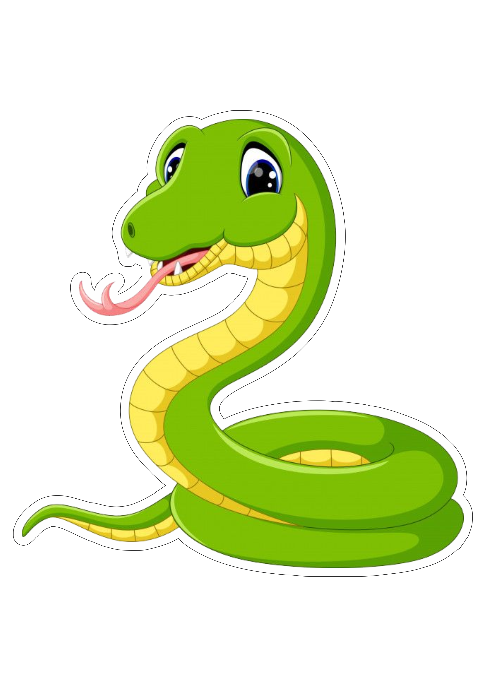

Passo a passo
O jogo da cobrinha (também conhecido como “Snake”) é simples de aprender, mas pode ficar desafiador conforme você avança.
Ao iniciar o jogo, você verá uma cobrinha pequena e um espaço vazio onde aparecerá a comida. A cobrinha começa se movendo automaticamente.
Use as teclas de seta (↑ ↓ ← →) para controlar a direção. O objetivo é fazer a cobrinha alcançar a comida.
Quando a cobrinha come, ela cresce e você ganha pontos. Uma nova comida aparece em outro lugar da tela.
O desafio é evitar colisões: você perde se bater nas paredes (em algumas versões) ou no próprio corpo.
Planeje seus movimentos, evite espaços apertados e tente pensar alguns passos à frente.
O objetivo é fazer a maior pontuação possível antes de perder.
Dica: quanto mais você joga, melhor fica!
